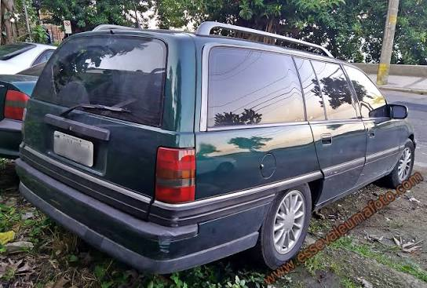

OLDSCHOOL
Ficha Técnica
Ano
1993 - 1996
Motor
4.1 | 6 cilindros
Potência
168 cv
Câmbio
Manual | 5 marchas
Tração
Traseira
Carroceria
Perua
Combustível
Gasolina
FIPE
R$ 30.000 ~ R$ 80.000
A perua de luxo que virou clássica
Derivada do Chevrolet Omega, a Suprema foi uma das peruas mais sofisticadas produzidas no Brasil. Com muito espaço, conforto e motores potentes, entregava desempenho e luxo em uma carroceria familiar. Hoje, é lembrada como uma das peruas nacionais mais interessantes dos anos 90.